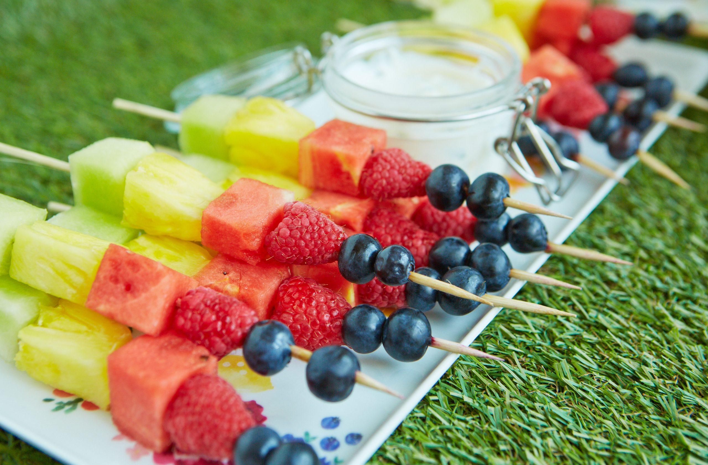

fruit kebabs
prep time:
10 mins
yield:
2
ingredients
½ pineapple
½ melon
½ small watermelon>
100g blueberries
100g raspberries
Order Now
steps
Washed, peeled and chopped the fruits into cubes.
Than add salt, black pepper powder,honey, oil and lemon juice.
Mix well and keep aside for 10 minutes.
Now arrange one by one all fruits cube into the toothpick.
Grill these kabab in oven for 2-3 minutes. You can roast on tawa.
Fruit kabab is ready to serve.